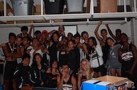

Home
Welcome to the Party
Hey! My name is Mónika Allen; Pronounced Mo-nee-ka. How often do I hear it correctly? If I'm being completely honest, maybe 1 time out of 10. But I actually find great pleasure in hearing the ways other people mispronounce my name. Some of my top favorites of all time include: 'Mauna Kea', 'Monikia', and 'Mistake'.

About Me
Some basic info about me: I'm a Junior at James Campbell Highschool and my birthday is January 17th. I share my date of birth with many great people like Michelle Obama, Muhammad Ali, and Lil John. Aren't they lucky. While it may come as a surprise because of my "caucasian elocution", I'm actually born and (primarily) raised on the island of O'ahu. But, I have spent a lot of my life in Japan surrounded by the language and culture. I have a pretty extensive ethnic background, but I am for the most part African American (as you can tell... LOL), Japanese, Korean, and Native American. My coding experience is currently at ZERO and I am highly unqualified to be in this class. But, I hope to improve and one day make a new hobby or even career out of coding!

Hobbies and Interests
Some of my hobbies include student council, track and field, drawing, anime, casual video games (Nintendo, The Sims, Otome Games and etc.), shopping, and video editing. I also enjoy hanging out with my friends. My favorite type of music is a mixture of R&B, Neo-Soul, Alternative Hip-Hop, and Disco. I love to eat fruits, hamburgers, and sushi. Cats are my favorite animal, and I follow (But don't genuinley believe in) astrological readings.

Enter My World